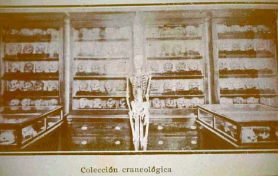

|
|  |
|
Museo Etnogáfico, colección craneológica
|
A similar collection, though this time principally from the Andean Northwest, could be seen at the University of Buenos Aires´ Ethnographic Museum, founded in 1904 under the directorship of Juan B. Ambrosetti. Although the picture of the 'craniological collection' looks almost identical to that of the La Plata showroom, it is interesting to compare the museographic contexts within which both were made to signify: at the La Plata museum, 'indigenous anatomy' was placed symmetrically opposite the gallery of 'comparative anatomy' (which contained a large number of animal skeletons), and within a large oval of galleries that documented the course of evolution from the earliest fossils to the animals of the present. At the Ethnographic Museum, meanwhile, skulls and skeletons (mostly from indigenous gravesites) were placed within an array of cultural relics: pottery, textiles, and metal objects from Tucumán, Salta and Jujuy.
|